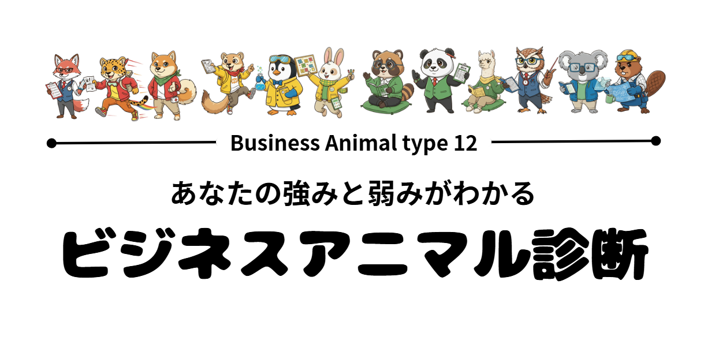

2026年度
募集要項
詳細を見る
arrow_forward

New Trend
動物タイプ別診断
絶妙なライン、これってセクハラ？
BitコインでFIREだ！
もっと見る
chevron_left
chevron_right
search
close
swap_vert
tune
grid_view
view_list
適用中の条件:
すべてクリア
LOADING...
並び替え
close
受講期間が短い順
check
受講期間が長い順
check
価格が安い順
check
価格が高い順
check
tune
フィルタ
close
キーワード
search
close
新着コースのみ
"NEW" マークがついたコースを表示
タグで絞り込む
受講期間
1
ヶ月 〜
12
ヶ月
受講料
0
円 〜
30,000
円
リセット
キャンセル
適用する
event_upcoming
6月1日開講の
申込締切は
5月15日
です。
お申込みはお早めに！
close